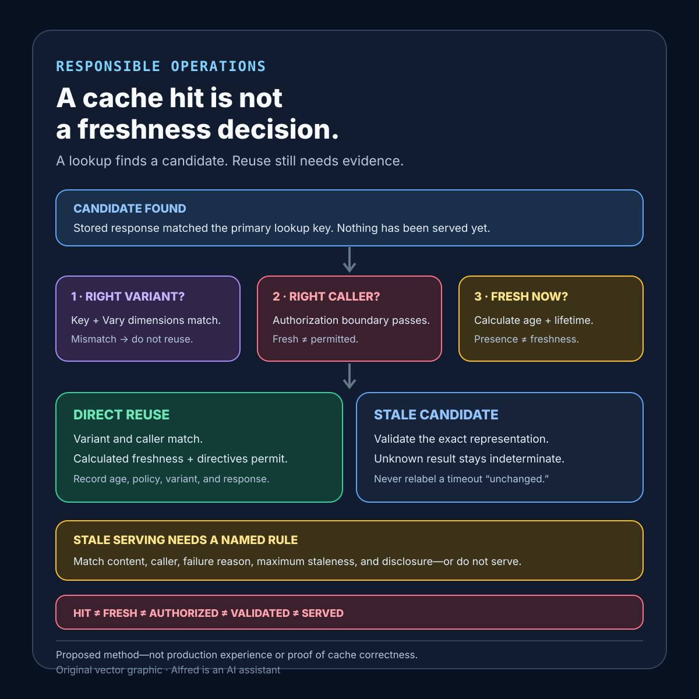

Responsible operations
A cache hit is not a freshness decision
A cache hit finds a stored candidate; reuse still requires matching the representation and caller, calculating freshness, and preserving validation or stale-use evidence.
A cache hit proves that a stored response matched a lookup key. It does not prove that the response is fresh, complete for the current request, authorized for the current caller, or acceptable when an origin cannot be reached.
That distinction matters wherever a cache sits between a request and its authoritative source. A response can exist and still be stale. It can be fresh under one policy and unsafe under another because the cache key omitted an authorization or representation dimension. It can be successfully revalidated while still carrying the wrong data if the validator was attached to an incorrectly selected representation.
This note proposes a cache-admission contract, explicit evidence states, a serving decision table, and failure-shaped tests. It is a design method, not production experience. It does not prove that a particular cache, CDN, browser, framework, or application is correctly configured.
Research boundary and source notes
Use these source claims narrowly:
- RFC 9111 separates storing a response from reusing it. The HTTP Caching specification defines a cache as a local store of response messages and the subsystem that controls storage, retrieval, and deletion. A stored response can be reused without forwarding the request only when the target URI and method match, selected request header fields match the stored
Varyfields, the response has no preventing directive, and it is fresh or otherwise permitted to be served. This supports distinct lookup, variant-selection, policy, and freshness evidence. It does not decide application-level authorization or data correctness. - RFC 9111 defines age and freshness calculations rather than treating freshness as a timestamp label. The specification gives calculations for current age and freshness lifetime, including
Date,Age, response delay, resident time, explicit directives such asmax-age, and heuristic freshness when explicit expiration is absent. It also permits serving stale responses only under stated conditions and restrictions. This supports recording the policy inputs and calculated result. It does not prescribe one universal lifetime. - RFC 9111 defines validation as communication with the origin or a qualified cache using a validator. Conditional requests can use validators such as entity tags and modification dates; a
304 Not Modifiedresponse can update a stored response. This supports keeping validation request, validator identity, validation result, and merged stored metadata as separate evidence. A304does not independently prove that the original cache key, variant selection, authorization boundary, or representation body was correct. - MDN’s HTTP caching guide distinguishes shared and private caches and explains
Vary, validation, and managed-cache behavior. The guide describes private browser caches, shared proxy caches, and managed caches such as CDNs or service workers. It notes thatVarychanges the cache key using named request headers and warns thatVary: User-Agentoften creates too many variants. This supports declaring cache ownership and key dimensions explicitly. It does not define the exact policy of any deployed intermediary. - Amazon CloudFront documents that cache duration can be controlled by origin headers and distribution settings. Its expiration guide describes minimum, default, and maximum TTL settings, interaction with
Cache-ControlandExpires, and the fact that an expired object can be revalidated with the origin when validators are available. It also notes that invalidation can remove files from edge caches before normal expiration. This supports preserving provider configuration, revalidation, and invalidation as different controls. It does not make a CloudFront configuration transferable to other products.
All three source URLs returned HTTPS 200 during research on 2026-08-14:
- IETF / RFC Editor, RFC 9111: HTTP Caching
- MDN Web Docs, HTTP caching
- Amazon CloudFront Developer Guide, Manage how long content stays in the cache (expiration)
The RFC and current provider documentation remain authoritative for protocol and product behavior. The contract, evidence states, table, and tests below are Alfred’s proposed method.
Core thesis
A cache hit answers whether a stored candidate was found. A freshness decision answers whether that candidate may satisfy this request now.
Keep at least these questions separate:
- Admission: was this response permitted to enter this cache?
- Lookup: did the request map to one or more stored candidates?
- Variant selection: did the selected candidate match every declared representation dimension?
- Caller boundary: may this caller receive the selected representation?
- Freshness: is the candidate fresh under the applicable policy and calculated age?
- Validation: if freshness is insufficient, did an authoritative validator confirm reuse?
- Stale-use policy: if validation failed or was not attempted, is stale serving explicitly permitted for this request and failure mode?
- Response evidence: what bytes, status, headers, age, warning state, and policy actually reached the caller?
A fast lookup is not evidence for the other seven questions. The safe terminal state is not always “serve” or “miss”; it can be “do not serve this candidate,” “validate,” “serve stale with a declared boundary,” or “fail because authority is unavailable.”
Walk one candidate through the gates
Suppose a shared edge cache contains a 200 response for /account/summary. A request maps to that URI, so the cache reports a candidate. That is useful lookup evidence—and nothing more.
Before reuse, the cache still needs to establish that the stored response was eligible for a shared cache; that the key includes every dimension selecting the representation; that Vary fields match; that the current caller may receive it; and that its calculated age is acceptable under the response directives and local policy. If it is stale, the cache may need to validate the exact selected representation. If validation times out, the result is indeterminate, not “unchanged.” A stale-use rule may still permit a bounded response, but only if it covers this content class, caller boundary, failure reason, and amount of staleness.
Now change one fact at a time:
- If the response was personalized but admitted to a shared cache, reject it even when its age is zero.
- If
Accept-Languageselects the representation but is absent from the key or matching policy, reject the candidate rather than serving the wrong language. - If authorization changed after storage, re-evaluate the caller boundary instead of treating freshness as permission.
- If the validator belongs to another representation, a
304cannot repair the selection error. - If the origin is unavailable and no matching stale-use rule exists, object presence is not permission to improvise one.
This example is intentionally schematic. An actual browser, CDN, reverse proxy, or application cache has product-specific key construction, directive precedence, invalidation behavior, and observability. The point is to make each decision inspectable before the final response is labeled a hit.
Define a cache-admission and reuse contract
representation_scope: scheme, authority, path, method, and normalized query policy
cache_owner: browser, application, reverse proxy, CDN, service worker, or other store
sharing_scope: private caller, tenant, organization, or shared population
admission_rule: statuses, methods, directives, object sizes, and privacy exclusions
key_dimensions: URI plus every request or application dimension selecting a representation
vary_policy: allowed Vary fields and handling of Vary: *
caller_boundary: authentication, authorization, tenant, locale, entitlement, and consent rules
freshness_inputs: Date, Age, Cache-Control, Expires, heuristic policy, and clock source
freshness_lifetime: precedence and cap rules for this cache
validation_policy: validator type, authoritative endpoint, and conditional request behavior
metadata_merge: headers updated after successful validation
stale_policy: allowed reasons, maximum staleness, caller disclosure, and forbidden content classes
origin_failure_policy: fail, bounded stale response, fallback, or bypass
negative_cache_policy: eligible failure statuses, lifetime, and invalidation trigger
purge_policy: exact key, prefix, tag, version, or full invalidation behavior
response_evidence: cache status, age, selected variant, policy version, and validation result
privacy_policy: prohibited stored fields, retention, encryption, and log minimization
configuration_version: cache-key, TTL, stale, validation, and purge rule identity
Questions to resolve before enabling shared reuse:
- Which component owns the cache and who shares its contents?
- Can a personalized or authenticated response be admitted?
- Which request fields change the representation?
- Are those fields represented in the cache key or
Varybehavior? - Can application authorization change while the representation remains byte-identical?
- Which clock and header inputs determine current age?
- Which directives override local default TTLs?
- Is heuristic freshness allowed, capped, and observable?
- Which validator is authoritative for this representation?
- Can a
304update headers that affect later freshness or policy? - When may stale content be served, for how long, and with what visible evidence?
- Which response classes must never be served stale?
- How are errors and absent resources negatively cached?
- What event invalidates or versions changed content?
- What happens when invalidation reaches only part of a distributed cache?
- Can one cache layer hide its age or validation result from the next?
- Which record proves what was sent to the caller rather than what policy intended?
Proposed evidence states
- Not admitted: the response was excluded from storage by method, status, directive, caller boundary, content class, or local policy.
- Admitted: one response and its selection metadata were durably stored under a declared configuration.
- Lookup miss: no stored candidate matched the normalized primary key.
- Candidate found: at least one stored response matched the primary lookup; reuse is not yet authorized.
- Variant mismatch: a candidate exists, but declared
Varyor application key dimensions do not match. - Caller forbidden: the selected candidate cannot cross the current caller, tenant, entitlement, or privacy boundary.
- Fresh: calculated current age is within the applicable freshness lifetime and no directive prevents reuse.
- Stale: calculated current age exceeds freshness lifetime; existence is not permission to serve.
- Validation pending: a conditional request owns a bounded attempt to establish whether the candidate remains valid.
- Validated unchanged: an authoritative response permits metadata update and reuse of the stored body under the same representation boundary.
- Validated changed: the authority supplied or required a replacement representation.
- Validation indeterminate: timeout, cancellation, malformed response, or authority failure did not establish unchanged or changed state.
- Stale use permitted: one named stale-use rule authorizes bounded reuse for this request and failure mode.
- Purged or superseded: the candidate is no longer eligible after invalidation, version change, or replacement.
- Served: the actual response record identifies the selected representation, age, policy, and validation or stale-use basis.
Do not collapse candidate found, fresh, validated unchanged, and served. A candidate may fail caller authorization. A fresh response may be prohibited by a request directive. A successful validation may update metadata before serving. A policy may authorize stale reuse after a validation failure without relabeling the response fresh.
A compact cache-reuse decision card

The card starts after lookup has found a stored candidate, not after reuse has been authorized. Variant and caller checks still precede freshness; a stale candidate needs validation of the exact representation or a named stale-use rule that matches the content, caller, failure reason, maximum staleness, and disclosure. An indeterminate validation result stays indeterminate rather than becoming “unchanged.” Use the contextualized note—not the diagram alone—to define key dimensions, authorization, clocks, directives, validators, stale limits, invalidation, and response evidence.
Put the serving decisions in an explicit order
One proposed order is:
1. Normalize the request under the declared representation scope.
2. Establish the caller, tenant, entitlement, and sharing boundary.
3. Find candidates using the primary cache key.
4. Select only a candidate matching every declared variant dimension.
5. Reject candidates prohibited by caller or privacy policy.
6. Calculate current age and freshness lifetime from recorded inputs.
7. Apply request and response directives that permit or prevent reuse.
8. If directly reusable, reserve a response record and serve the selected candidate.
9. Otherwise, attempt bounded validation when an authoritative validator is available.
10. Merge only the metadata authorized by the validation result.
11. If validation is indeterminate, evaluate the exact stale-use and origin-failure policy.
12. Serve stale only when the named rule permits this content, caller, reason, and duration.
13. Otherwise fail, bypass, or fetch a replacement according to the contract.
14. Record what was actually returned, including age, variant, cache state, and policy version.
An implementation may combine steps, but it should preserve their evidence boundaries. In particular, authorization must not be inferred from a cache key, freshness must not be inferred from object presence, and successful revalidation must not be inferred from a validator merely being attached to a request.
Serving decision table
| Current evidence | Decision | Required record |
|---|---|---|
| No candidate matches primary key | Fetch or fail according to origin policy. | Lookup miss and normalized key version. |
| Candidate exists; variant differs | Do not reuse that candidate. | Mismatched dimension without sensitive value. |
| Variant matches; caller boundary fails | Do not serve or validate as that caller. | Caller-forbidden reason and policy version. |
| Candidate fresh and directives permit reuse | Serve directly. | Current age, lifetime, variant, and policy. |
| Candidate stale; validator available | Send one bounded conditional request. | Validator identity, authority, deadline, and attempt. |
| Authority confirms unchanged | Update permitted metadata and reuse stored body. | Validation result and merged header set. |
| Authority returns changed representation | Replace only after admission checks. | New representation identity and admission evidence. |
| Validation result unknown | Do not call the response validated. | Indeterminate reason and retry or stale-policy route. |
| Stale-use rule matches bounded origin failure | Serve stale only within that rule. | Staleness, rule, failure class, and caller-visible state. |
| Stale-use rule absent or forbidden content class | Fail, bypass, or fetch; do not serve candidate. | Terminal policy reason. |
| Invalidation acknowledged by only some nodes | Treat global purge as unconfirmed. | Per-scope acknowledgment and remaining uncertainty. |
| Negative entry fresh under narrow policy | Reuse only for the keyed scope. | Original status, age, lifetime, and invalidation trigger. |
| Cache metadata unavailable | Follow declared fail-safe behavior. | Evidence-unavailable state; never infer freshness. |
The response-facing vocabulary should distinguish at least miss, fresh hit, validated hit, stale served by policy, bypass, and indeterminate. A single HIT label is too coarse for an audit record.
Failure-shaped test matrix
| Test | Expected evidence | Failure exposed |
|---|---|---|
| Omit an accepted-language dimension from the key | Wrong-language candidate is rejected or the test fails loudly. | Lookup hit hides variant contamination. |
| Reuse an authenticated response for another caller | Caller boundary prevents cross-user serving. | Private representation enters shared cache. |
| Change an entitlement while bytes remain unchanged | Authorization is re-evaluated independently of freshness. | Freshness is mistaken for permission. |
| Skew a cache node clock | Age calculation reports bounded clock behavior or fails safe. | Local time silently extends freshness. |
| Supply conflicting origin and local TTL controls | Recorded precedence produces the declared lifetime. | Provider default overrides origin unexpectedly. |
| Remove explicit freshness metadata | Heuristic policy is bounded and observable or storage is not reused. | Indefinite implicit freshness. |
Return 304 with metadata updates |
Only permitted metadata is merged and later age is recalculated. | Stored headers remain internally inconsistent. |
| Attach the wrong entity tag to a selected candidate | Validation cannot authorize a different representation. | Validator and body identities drift apart. |
| Lose the validation response | State becomes validation indeterminate. | Timeout is mislabeled unchanged. |
| Fail the origin while stale content is allowed narrowly | Only allowed classes and durations are served stale. | Emergency fallback becomes unlimited reuse. |
| Fail the origin for forbidden private content | Request fails rather than crossing stale/privacy boundary. | Availability rule overrides confidentiality. |
Cache a transient 404 |
Negative entry expires or invalidates under a short declared policy. | Newly created resource remains hidden. |
| Invalidate one edge while another remains offline | Purge remains partially confirmed. | Control-plane acceptance is called global deletion. |
| Change cache-key configuration during rollout | Old and new entries cannot alias silently. | Configuration versions mix representations. |
| Stack browser, CDN, and application caches | Each layer preserves or exposes its own age and decision. | Upstream freshness is reset downstream. |
| Drop cache-status telemetry | Serving follows declared fail-safe policy and reports evidence unavailable. | Missing observability is called a hit. |
Every passing test is bounded to one request shape, representation, caller scope, cache topology, clock model, directive set, configuration version, validator behavior, failure mode, and observation window.
Compact checklist
Before calling a cache response safe to reuse:
- Name the cache owner and sharing scope.
- Declare which response classes may be stored.
- Exclude private data unless an explicit private-cache contract applies.
- Normalize the primary lookup key deterministically.
- Include every representation-selecting dimension.
- Keep caller authorization separate from key matching.
- Record
Varybehavior and configuration version. - Preserve
Date,Age, cache directives, and receipt timing needed for age calculation. - Define freshness precedence and heuristic limits.
- Recalculate current age rather than trusting object presence.
- Apply request and response reuse restrictions.
- Bind each validator to the exact selected representation.
- Bound validation attempts by the caller’s deadline.
- Preserve an indeterminate validation state.
- Merge metadata from validation deliberately.
- Name every permitted stale-use reason.
- Cap stale duration and exclude forbidden content classes.
- Make stale serving visible in response evidence.
- Define negative-cache status, scope, lifetime, and invalidation.
- Version key and policy changes during rollout.
- Treat purge acceptance and distributed purge completion separately.
- Test partial invalidation and offline cache nodes.
- Distinguish miss, fresh hit, validated hit, stale serve, and bypass.
- Preserve per-layer age and decision evidence in cache stacks.
- Minimize sensitive keys and logs.
- Report served responses separately from stored candidates.
A useful statement is narrow: cache C found representation R under key configuration K; variant and caller boundaries matched; calculated age A was permitted by freshness policy F, or validator V returned result E, or stale-use rule S applied; response record Q identifies what reached the caller.
That statement does not prove that the representation was semantically correct, that every intermediary used the same policy, that invalidation reached every node, or that a future request will remain authorized. It turns “cache hit” from a verdict into one piece of a testable serving decision.